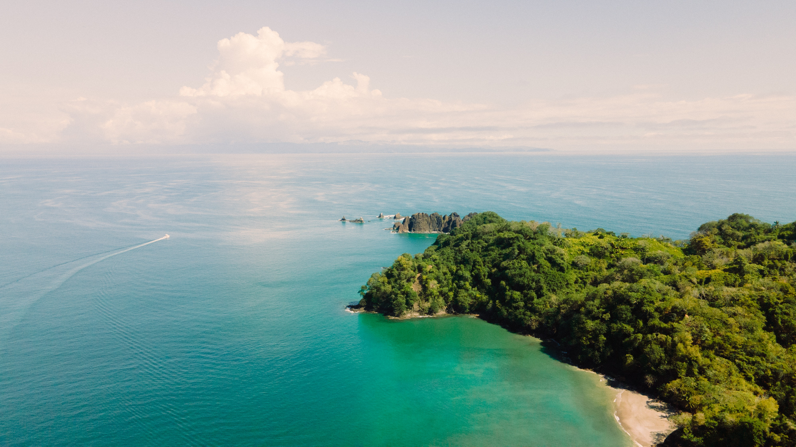
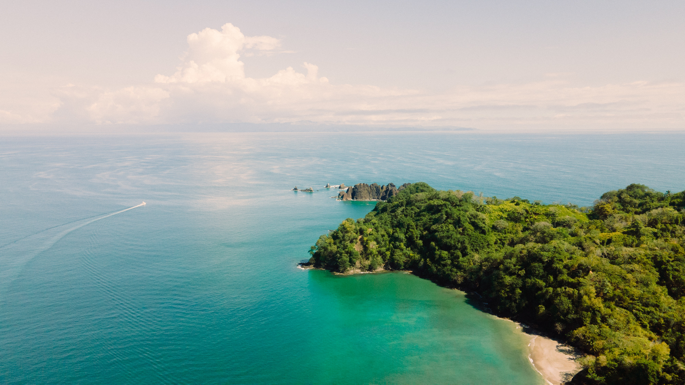

Turtles are slow-moving reptiles classified as Testudines. According to scientific evidence, they are one of the earliest groups of reptiles ever known, having developed millions of years ago. Turtles can live in water, on land, or both, depending on the species. Turtles are classified into two suborders: Cryptodira and Pleurodia. There are no special words for turtles based on whether they are female or male; nonetheless, a group of turtles is referred to as a "bale", "dole", or "nest". "Hatchlings" are baby turtles.


Turtles are among one the longest-living reptiles. They can live from 50 ↔ 200 years. Watch this short video to learn about the life cycle of a turtle!
When it comes to reproduction, turtles lay their eggs on land. They lay their eggs in the nests they dig into the sand or dirt after migrating. Some turtles guard their eggs for a few weeks, but most of them don't care for their young and leave as soon as they lay their eggs. Depending on the species, turtles can lay anywhere between 50 ↔ 150 eggs at a time. The sex of the young turtles can be determined by the temperature of the area the mother laid her eggs. Hotter temperatures result in more female turtles, whereas cooler temperatures result in more male turtles. Though turtles lay lots of eggs, the mortality rate for baby turtles is significant because they are vulnerable and do not have a protector.

Although there are 320 different species of turtles known to exist, only 79 of them are still alive.
Since there are so many different species of turtles, it’s difficult to establish average sizes and weights for all of them. However, the largest living turtle (The Leatherback Turtle) can weigh up to 450 kilograms and is around 3 meters long. The largest turtle to be recorded weighed around 2000 kilograms and was 4.5 meters long. The smallest of turtles can weigh just over 5 kilograms and are around 10 centimeters in length.

Some of the infections and diseases that turtles may have include …
Turtles are adaptive, they live all over the world in all types of climates. Most turtles live in southeastern North America and South Asia. Most turtles live in tropical and/or cooler areas around the world. Some places turtles can be found in include …
 



Many turtles are omnivores. They eat plants, small fish and insects. However, some turtles, such as many turtles that live on land, are herbivores and eat grass and algae. Other turtles, like sea turtles, are carnivores and eat frogs, fish, clams, jellyfish, and other turtles.

Watch these two videos two get a glimpse of the history and evolution of turtles!
Return to the top of the page.